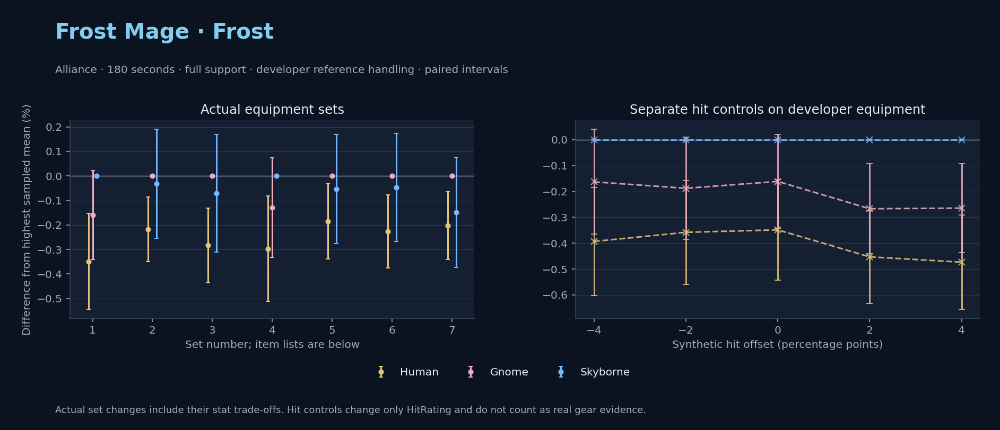

Alliance · Human / Gnome / Skyborne

No pet or guardian appears in the reference combat metrics. Reference: Human, developer equipment, 180 seconds and full support. Pet choices remain those of the developer build.
WoWSims developer · P1 Arcane
Unimplemented enchant or active set effects: [{"id": 181, "pieces": 2, "effects": ["+8 All Resistances."]}, {"id": 181, "pieces": 4, "effects": ["When struck in combat has a 2% chance of freezing the attacker in place for 3s. Can only occur once every 60 sec."]}]
180 seconds, full support and original developer references. Hit below is generic sheet melee / spell hit; school and talent bonuses can be attached directly to spells.
| Race | DPS | Gap and interval | Generic hit | Replay |
|---|---|---|---|---|
| Skyborne | 605.91 | +0.000% ± 0.000 | 2.9% / 2.9% | Native input · Website JSON |
| Gnome | 604.94 | -0.160% ± 0.181 | 2.9% / 2.9% | Native input · Website JSON |
| Human | 603.79 | -0.348% ± 0.195 | 2.9% / 2.9% | Native input · Website JSON |
| Slot | Item | ID | Enchant |
|---|---|---|---|
| Head | Magister's Crown | 16686 | |
| Neck | Gem of Trapped Innocents | 23057 | |
| Shoulder | Sorcerer's Mantle | 226936 | |
| Back | Drape of Vaulted Secrets | 21415 | |
| Chest | Magister's Robes | 16688 | |
| Wrist | Magister's Bindings | 16683 | |
| Hands | Magister's Gloves | 16684 | |
| Waist | Magister's Belt | 16685 | |
| Legs | Magister's Leggings | 16687 | |
| Feet | Magister's Boots | 16682 | |
| Ring 1 | Brilliant Watcher's Signet | 275982 | |
| Ring 2 | Ring of Entropy | 18543 | |
| Trinket 1 | Talisman of Ephemeral Power | 18820 | |
| Trinket 2 | Neltharion's Tear | 19379 | |
| Main hand | Grand Marshal's Mageblade | 23451 | |
| Off hand | Master Dragonslayer's Orb | 19366 | |
| Ranged / relic | Torch of Light | 279246 |
Community calculated list · Published pre-raid
180 seconds, full support and original developer references. Hit below is generic sheet melee / spell hit; school and talent bonuses can be attached directly to spells.
| Race | DPS | Gap and interval | Generic hit | Replay |
|---|---|---|---|---|
| Gnome | 622.05 | +0.000% ± 0.000 | 4.9% / 4.9% | Native input · Website JSON |
| Skyborne | 621.85 | -0.032% ± 0.221 | 4.9% / 4.9% | Native input · Website JSON |
| Human | 620.69 | -0.218% ± 0.131 | 4.9% / 4.9% | Native input · Website JSON |
| Slot | Item | ID | Enchant |
|---|---|---|---|
| Head | Sorcerer's Crown | 226935 | Arcanum of Focus |
| Neck | Archlight Talisman | 15856 | Enchant Necklace - Spell Power |
| Shoulder | Mantle of the Timbermaw | 19050 | |
| Back | Arcanoweave Cloak | 272411 | |
| Chest | Sorcerer's Robes | 226932 | Mystic Rugged Armor Kit |
| Wrist | Runecloth Cuffs | 254123 | Enchant Bracer - Greater Spellpower |
| Hands | Sorcerer's Gauntlets | 226930 | Enchant Gloves - Minor Haste |
| Waist | Belt of the Archmage | 18405 | |
| Legs | Magister's Leggings | 16687 | Arcanum of Focus |
| Feet | Sorcerer's Sandals | 226931 | Mystic Rugged Armor Kit |
| Ring 1 | Blessed Band of Light | 272407 | |
| Ring 2 | Maiden's Circle | 13001 | |
| Trinket 1 | Weakness Analyzer | 272438 | |
| Trinket 2 | Uther's Strength | 11302 | |
| Main hand | Sageblade | 22383 | |
| Off hand | Spirit of Aquementas | 11904 | Enchant Off-Hand - Superior Intellect |
| Ranged / relic | Greater Eternal Wand | 249237 |
Published one-slot hit alternative · Published pre-raid
One source-listed alternative; at least 80% of the source slot score retained. Reported hit selects the contrast; only native stats determine simulation outcomes. This is an experimental combination, not an endorsed best set.
180 seconds, full support and original developer references. Hit below is generic sheet melee / spell hit; school and talent bonuses can be attached directly to spells.
| Race | DPS | Gap and interval | Generic hit | Replay |
|---|---|---|---|---|
| Gnome | 608.92 | +0.000% ± 0.000 | 3.9% / 3.9% | Native input · Website JSON |
| Skyborne | 608.50 | -0.070% ± 0.240 | 3.9% / 3.9% | Native input · Website JSON |
| Human | 607.20 | -0.283% ± 0.152 | 3.9% / 3.9% | Native input · Website JSON |
| Slot | Item | ID | Enchant |
|---|---|---|---|
| Head | Sorcerer's Crown | 226935 | Arcanum of Focus |
| Neck | Archlight Talisman | 15856 | Enchant Necklace - Spell Power |
| Shoulder | Mantle of the Timbermaw | 19050 | |
| Back | Arcanoweave Cloak | 272411 | |
| Chest | Sorcerer's Robes | 226932 | Mystic Rugged Armor Kit |
| Wrist | Runecloth Cuffs | 254123 | Enchant Bracer - Greater Spellpower |
| Hands | Gloves of Spell Mastery | 14146 | Enchant Gloves - Minor Haste |
| Waist | Belt of the Archmage | 18405 | |
| Legs | Magister's Leggings | 16687 | Arcanum of Focus |
| Feet | Sorcerer's Sandals | 226931 | Mystic Rugged Armor Kit |
| Ring 1 | Blessed Band of Light | 272407 | |
| Ring 2 | Maiden's Circle | 13001 | |
| Trinket 1 | Weakness Analyzer | 272438 | |
| Trinket 2 | Uther's Strength | 11302 | |
| Main hand | Sageblade | 22383 | |
| Off hand | Spirit of Aquementas | 11904 | Enchant Off-Hand - Superior Intellect |
| Ranged / relic | Greater Eternal Wand | 249237 |
Published one-slot hit alternative · Published pre-raid
One source-listed alternative; at least 80% of the source slot score retained. Reported hit selects the contrast; only native stats determine simulation outcomes. This is an experimental combination, not an endorsed best set.
180 seconds, full support and original developer references. Hit below is generic sheet melee / spell hit; school and talent bonuses can be attached directly to spells.
| Race | DPS | Gap and interval | Generic hit | Replay |
|---|---|---|---|---|
| Skyborne | 624.21 | +0.000% ± 0.000 | 5.9% / 5.9% | Native input · Website JSON |
| Gnome | 623.40 | -0.130% ± 0.203 | 5.9% / 5.9% | Native input · Website JSON |
| Human | 622.36 | -0.297% ± 0.214 | 5.9% / 5.9% | Native input · Website JSON |
| Slot | Item | ID | Enchant |
|---|---|---|---|
| Head | Sorcerer's Crown | 226935 | Arcanum of Focus |
| Neck | Archlight Talisman | 15856 | Enchant Necklace - Spell Power |
| Shoulder | Mantle of the Timbermaw | 19050 | |
| Back | Arcanoweave Cloak | 272411 | |
| Chest | Sorcerer's Robes | 226932 | Mystic Rugged Armor Kit |
| Wrist | Runecloth Cuffs | 254123 | Enchant Bracer - Greater Spellpower |
| Hands | Sorcerer's Gauntlets | 226930 | Enchant Gloves - Minor Haste |
| Waist | Belt of the Archmage | 18405 | |
| Legs | Magister's Leggings | 16687 | Arcanum of Focus |
| Feet | Sorcerer's Sandals | 226931 | Mystic Rugged Armor Kit |
| Ring 1 | Blessed Band of Light | 272407 | |
| Ring 2 | Channeler's Ring | 272406 | |
| Trinket 1 | Weakness Analyzer | 272438 | |
| Trinket 2 | Uther's Strength | 11302 | |
| Main hand | Sageblade | 22383 | |
| Off hand | Spirit of Aquementas | 11904 | Enchant Off-Hand - Superior Intellect |
| Ranged / relic | Greater Eternal Wand | 249237 |
Published ranked alternatives · Published pre-raid
Recorded source replacements: [{"slot": "shoulder", "from": 227808, "to": 19050, "publishedAlternativeRank": 1, "publishedEpDelta": -10.7, "reason": "First published alternative compatible with the current WoWSims database, class, faction and occupied slots."}, {"slot": "waist", "from": 228190, "to": 18405, "publishedAlternativeRank": 1, "publishedEpDelta": -12.2, "reason": "First published alternative compatible with the current WoWSims database, class, faction and occupied slots."}]
180 seconds, full support and original developer references. Hit below is generic sheet melee / spell hit; school and talent bonuses can be attached directly to spells.
| Race | DPS | Gap and interval | Generic hit | Replay |
|---|---|---|---|---|
| Gnome | 624.50 | +0.000% ± 0.000 | 5.8% / 5.8% | Native input · Website JSON |
| Skyborne | 624.17 | -0.054% ± 0.222 | 5.8% / 5.8% | Native input · Website JSON |
| Human | 623.35 | -0.185% ± 0.153 | 5.8% / 5.8% | Native input · Website JSON |
| Slot | Item | ID | Enchant |
|---|---|---|---|
| Head | Sorcerer's Crown | 226935 | Arcanum of Focus |
| Neck | Archlight Talisman | 15856 | Enchant Necklace - Spell Power |
| Shoulder | Mantle of the Timbermaw | 19050 | |
| Back | Arcanoweave Cloak | 272411 | |
| Chest | Robe of the Archmage | 14152 | Mystic Rugged Armor Kit |
| Wrist | Runecloth Cuffs | 254123 | Enchant Bracer - Greater Spellpower |
| Hands | Sorcerer's Gauntlets | 226930 | Enchant Gloves - Minor Haste |
| Waist | Belt of the Archmage | 18405 | |
| Legs | Magister's Leggings | 16687 | Arcanum of Focus |
| Feet | Sorcerer's Sandals | 226931 | Mystic Rugged Armor Kit |
| Ring 1 | Blessed Band of Light | 272407 | |
| Ring 2 | Maiden's Circle | 13001 | |
| Trinket 1 | Weakness Analyzer | 272438 | |
| Trinket 2 | Frozen Heart of the Mountain | 249469 | |
| Main hand | Sageblade | 22383 | |
| Off hand | Spirit of Aquementas | 11904 | Enchant Off-Hand - Superior Intellect |
| Ranged / relic | Brilliant Wand | 249385 |
Published one-slot hit alternative · Published pre-raid
One source-listed alternative; at least 80% of the source slot score retained. Reported hit selects the contrast; only native stats determine simulation outcomes. This is an experimental combination, not an endorsed best set.
Recorded source replacements: [{"slot": "shoulder", "from": 227808, "to": 19050, "publishedAlternativeRank": 1, "publishedEpDelta": -10.7, "reason": "First published alternative compatible with the current WoWSims database, class, faction and occupied slots."}, {"slot": "waist", "from": 228190, "to": 18405, "publishedAlternativeRank": 1, "publishedEpDelta": -12.2, "reason": "First published alternative compatible with the current WoWSims database, class, faction and occupied slots."}]
180 seconds, full support and original developer references. Hit below is generic sheet melee / spell hit; school and talent bonuses can be attached directly to spells.
| Race | DPS | Gap and interval | Generic hit | Replay |
|---|---|---|---|---|
| Gnome | 619.39 | +0.000% ± 0.000 | 4.8% / 4.8% | Native input · Website JSON |
| Skyborne | 619.10 | -0.047% ± 0.220 | 4.8% / 4.8% | Native input · Website JSON |
| Human | 617.99 | -0.226% ± 0.148 | 4.8% / 4.8% | Native input · Website JSON |
| Slot | Item | ID | Enchant |
|---|---|---|---|
| Head | Sorcerer's Crown | 226935 | Arcanum of Focus |
| Neck | Archlight Talisman | 15856 | Enchant Necklace - Spell Power |
| Shoulder | Mantle of the Timbermaw | 19050 | |
| Back | Arcanoweave Cloak | 272411 | |
| Chest | Robe of the Archmage | 14152 | Mystic Rugged Armor Kit |
| Wrist | Runecloth Cuffs | 254123 | Enchant Bracer - Greater Spellpower |
| Hands | Gloves of Spell Mastery | 14146 | Enchant Gloves - Minor Haste |
| Waist | Belt of the Archmage | 18405 | |
| Legs | Magister's Leggings | 16687 | Arcanum of Focus |
| Feet | Sorcerer's Sandals | 226931 | Mystic Rugged Armor Kit |
| Ring 1 | Blessed Band of Light | 272407 | |
| Ring 2 | Maiden's Circle | 13001 | |
| Trinket 1 | Weakness Analyzer | 272438 | |
| Trinket 2 | Frozen Heart of the Mountain | 249469 | |
| Main hand | Sageblade | 22383 | |
| Off hand | Spirit of Aquementas | 11904 | Enchant Off-Hand - Superior Intellect |
| Ranged / relic | Brilliant Wand | 249385 |
Published one-slot hit alternative · Published pre-raid
One source-listed alternative; at least 80% of the source slot score retained. Reported hit selects the contrast; only native stats determine simulation outcomes. This is an experimental combination, not an endorsed best set.
Recorded source replacements: [{"slot": "shoulder", "from": 227808, "to": 19050, "publishedAlternativeRank": 1, "publishedEpDelta": -10.7, "reason": "First published alternative compatible with the current WoWSims database, class, faction and occupied slots."}, {"slot": "waist", "from": 228190, "to": 18405, "publishedAlternativeRank": 1, "publishedEpDelta": -12.2, "reason": "First published alternative compatible with the current WoWSims database, class, faction and occupied slots."}]
180 seconds, full support and original developer references. Hit below is generic sheet melee / spell hit; school and talent bonuses can be attached directly to spells.
| Race | DPS | Gap and interval | Generic hit | Replay |
|---|---|---|---|---|
| Gnome | 625.98 | +0.000% ± 0.000 | 6.8% / 6.8% | Native input · Website JSON |
| Skyborne | 625.06 | -0.148% ± 0.224 | 6.8% / 6.8% | Native input · Website JSON |
| Human | 624.72 | -0.202% ± 0.138 | 6.8% / 6.8% | Native input · Website JSON |
| Slot | Item | ID | Enchant |
|---|---|---|---|
| Head | Sorcerer's Crown | 226935 | Arcanum of Focus |
| Neck | Archlight Talisman | 15856 | Enchant Necklace - Spell Power |
| Shoulder | Mantle of the Timbermaw | 19050 | |
| Back | Arcanoweave Cloak | 272411 | |
| Chest | Robe of the Archmage | 14152 | Mystic Rugged Armor Kit |
| Wrist | Runecloth Cuffs | 254123 | Enchant Bracer - Greater Spellpower |
| Hands | Sorcerer's Gauntlets | 226930 | Enchant Gloves - Minor Haste |
| Waist | Belt of the Archmage | 18405 | |
| Legs | Magister's Leggings | 16687 | Arcanum of Focus |
| Feet | Sorcerer's Sandals | 226931 | Mystic Rugged Armor Kit |
| Ring 1 | Blessed Band of Light | 272407 | |
| Ring 2 | Channeler's Ring | 272406 | |
| Trinket 1 | Weakness Analyzer | 272438 | |
| Trinket 2 | Frozen Heart of the Mountain | 249469 | |
| Main hand | Sageblade | 22383 | |
| Off hand | Spirit of Aquementas | 11904 | Enchant Off-Hand - Superior Intellect |
| Ranged / relic | Brilliant Wand | 249385 |
The same declared pool is available to every race. Each race keeps its best validation-sample set with its screening-selected racial policy. Separate samples confirm that choice, with fresh precision samples near the practical-loss boundary. Gaps use the highest sampled mean under that same duration, support and reference treatment as their reference. A zero reference gap does not certify a race; the main matrix also allows uncertainty in the leader.
| Pool | Seconds | Support | References | Race | DPS | Gap and interval | Racial policies / mana | Selected set | Generic hit: melee / spell | Replay |
|---|---|---|---|---|---|---|---|---|---|---|
| published-pre-raid | 60 | full | developer | Skyborne | 648.14 | +0.000% ± 0.00020,000 iterations | developer / developer / developerMana waits 0.0s | published-mage-frost-alliance-9aba5284f491b8b4-higher-hit | 6.8% / 6.8% | Input · Result · Stats |
| published-pre-raid | 60 | full | developer | Gnome | 647.40 | -0.114% ± 0.03320,000 iterations | developer / developer / developerMana waits 0.0s | published-mage-frost-alliance-9aba5284f491b8b4-higher-hit | 6.8% / 6.8% | Input · Result · Stats |
| published-pre-raid | 60 | full | developer | Human | 642.78 | -0.828% ± 0.03820,000 iterations | developer / developer / developerMana waits 0.0s | published-mage-frost-alliance-9aba5284f491b8b4-higher-hit | 6.8% / 6.8% | Input · Result · Stats |
| published-pre-raid | 60 | full | explicit | Skyborne | 648.14 | +0.000% ± 0.00020,000 iterations | developer / developer / developerMana waits 0.0s | published-mage-frost-alliance-9aba5284f491b8b4-higher-hit | 6.8% / 6.8% | Input · Result · Stats |
| published-pre-raid | 60 | full | explicit | Gnome | 647.40 | -0.114% ± 0.03320,000 iterations | developer / developer / developerMana waits 0.0s | published-mage-frost-alliance-9aba5284f491b8b4-higher-hit | 6.8% / 6.8% | Input · Result · Stats |
| published-pre-raid | 60 | full | explicit | Human | 642.78 | -0.828% ± 0.03820,000 iterations | developer / developer / developerMana waits 0.0s | published-mage-frost-alliance-9aba5284f491b8b4-higher-hit | 6.8% / 6.8% | Input · Result · Stats |
| published-pre-raid | 60 | self | developer | Skyborne | 569.48 | +0.000% ± 0.0005,000 iterations | developer / developer / developerMana waits 0.0s | published-mage-frost-alliance-9aba5284f491b8b4-higher-hit | 6.8% / 6.8% | Input · Result · Stats |
| published-pre-raid | 60 | self | developer | Gnome | 569.23 | -0.045% ± 0.0685,000 iterations | developer / developer / developerMana waits 0.0s | published-mage-frost-alliance-9aba5284f491b8b4-higher-hit | 6.8% / 6.8% | Input · Result · Stats |
| published-pre-raid | 60 | self | developer | Human | 565.20 | -0.752% ± 0.0795,000 iterations | developer / developer / developerMana waits 0.0s | published-mage-frost-alliance-9aba5284f491b8b4-higher-hit | 6.8% / 6.8% | Input · Result · Stats |
| published-pre-raid | 60 | self | explicit | Skyborne | 569.48 | +0.000% ± 0.0005,000 iterations | developer / developer / developerMana waits 0.0s | published-mage-frost-alliance-9aba5284f491b8b4-higher-hit | 6.8% / 6.8% | Input · Result · Stats |
| published-pre-raid | 60 | self | explicit | Gnome | 569.23 | -0.045% ± 0.0685,000 iterations | developer / developer / developerMana waits 0.0s | published-mage-frost-alliance-9aba5284f491b8b4-higher-hit | 6.8% / 6.8% | Input · Result · Stats |
| published-pre-raid | 60 | self | explicit | Human | 565.20 | -0.752% ± 0.0795,000 iterations | developer / developer / developerMana waits 0.0s | published-mage-frost-alliance-9aba5284f491b8b4-higher-hit | 6.8% / 6.8% | Input · Result · Stats |
| published-pre-raid | 180 | full | developer | Gnome | 625.29 | +0.000% ± 0.00020,000 iterations | developer / developer / developerMana waits 0.4s | published-mage-frost-alliance-9aba5284f491b8b4-higher-hit | 6.8% / 6.8% | Input · Result · Stats · Website JSON |
| published-pre-raid | 180 | full | developer | Human | 623.97 | -0.211% ± 0.03220,000 iterations | developer / developer / developerMana waits 0.5s | published-mage-frost-alliance-9aba5284f491b8b4-higher-hit | 6.8% / 6.8% | Input · Result · Stats · Website JSON |
| published-pre-raid | 180 | full | developer | Skyborne | 623.89 | -0.224% ± 0.05020,000 iterations | developer / developer / developerMana waits 0.7s | published-mage-frost-alliance-9aba5284f491b8b4-higher-hit | 6.8% / 6.8% | Input · Result · Stats · Website JSON |
| published-pre-raid | 180 | full | explicit | Gnome | 625.29 | +0.000% ± 0.00020,000 iterations | developer / developer / developerMana waits 0.4s | published-mage-frost-alliance-9aba5284f491b8b4-higher-hit | 6.8% / 6.8% | Input · Result · Stats |
| published-pre-raid | 180 | full | explicit | Human | 623.97 | -0.211% ± 0.03220,000 iterations | developer / developer / developerMana waits 0.5s | published-mage-frost-alliance-9aba5284f491b8b4-higher-hit | 6.8% / 6.8% | Input · Result · Stats |
| published-pre-raid | 180 | full | explicit | Skyborne | 623.89 | -0.224% ± 0.05020,000 iterations | developer / developer / developerMana waits 0.7s | published-mage-frost-alliance-9aba5284f491b8b4-higher-hit | 6.8% / 6.8% | Input · Result · Stats |
| published-pre-raid | 180 | self | developer | Human | 511.16 | +0.000% ± 0.00020,000 iterations | developer / developer / developerMana waits 12.8s | published-mage-frost-alliance-941a7d3d694080f2-higher-hit | 5.9% / 5.9% | Input · Result · Stats |
| published-pre-raid | 180 | self | developer | Gnome | 508.86 | -0.450% ± 0.07220,000 iterations | developer / developer / developerMana waits 14.8s | published-mage-frost-alliance-941a7d3d694080f2-higher-hit | 5.9% / 5.9% | Input · Result · Stats |
| published-pre-raid | 180 | self | developer | Skyborne | 508.46 | -0.527% ± 0.07620,000 iterations | developer / developer / developerMana waits 13.6s | published-mage-frost-alliance-941a7d3d694080f2-higher-hit | 5.9% / 5.9% | Input · Result · Stats |
| published-pre-raid | 180 | self | explicit | Human | 511.16 | +0.000% ± 0.00020,000 iterations | developer / developer / developerMana waits 12.8s | published-mage-frost-alliance-941a7d3d694080f2-higher-hit | 5.9% / 5.9% | Input · Result · Stats |
| published-pre-raid | 180 | self | explicit | Gnome | 508.86 | -0.450% ± 0.07220,000 iterations | developer / developer / developerMana waits 14.8s | published-mage-frost-alliance-941a7d3d694080f2-higher-hit | 5.9% / 5.9% | Input · Result · Stats |
| published-pre-raid | 180 | self | explicit | Skyborne | 508.46 | -0.527% ± 0.07620,000 iterations | developer / developer / developerMana waits 13.6s | published-mage-frost-alliance-941a7d3d694080f2-higher-hit | 5.9% / 5.9% | Input · Result · Stats |
| published-pre-raid | 300 | full | developer | Skyborne | 623.61 | +0.000% ± 0.00020,000 iterations | developer / developer / developerMana waits 5.0s | published-mage-frost-alliance-9aba5284f491b8b4 | 5.8% / 5.8% | Input · Result · Stats |
| published-pre-raid | 300 | full | developer | Gnome | 622.95 | -0.106% ± 0.04620,000 iterations | developer / developer / developerMana waits 4.3s | published-mage-frost-alliance-9aba5284f491b8b4-higher-hit | 6.8% / 6.8% | Input · Result · Stats |
| published-pre-raid | 300 | full | developer | Human | 621.99 | -0.260% ± 0.04220,000 iterations | developer / developer / developerMana waits 3.5s | published-mage-frost-alliance-9aba5284f491b8b4 | 5.8% / 5.8% | Input · Result · Stats |
| published-pre-raid | 300 | full | explicit | Skyborne | 623.61 | +0.000% ± 0.00020,000 iterations | developer / developer / developerMana waits 5.0s | published-mage-frost-alliance-9aba5284f491b8b4 | 5.8% / 5.8% | Input · Result · Stats |
| published-pre-raid | 300 | full | explicit | Gnome | 622.95 | -0.106% ± 0.04620,000 iterations | developer / developer / developerMana waits 4.3s | published-mage-frost-alliance-9aba5284f491b8b4-higher-hit | 6.8% / 6.8% | Input · Result · Stats |
| published-pre-raid | 300 | full | explicit | Human | 621.99 | -0.260% ± 0.04220,000 iterations | developer / developer / developerMana waits 3.5s | published-mage-frost-alliance-9aba5284f491b8b4 | 5.8% / 5.8% | Input · Result · Stats |
| published-pre-raid | 300 | self | developer | Human | 459.08 | +0.000% ± 0.0005,000 iterations | developer / developer / developerMana waits 92.6s | published-mage-frost-alliance-941a7d3d694080f2-higher-hit | 5.9% / 5.9% | Input · Result · Stats |
| published-pre-raid | 300 | self | developer | Skyborne | 454.31 | -1.039% ± 0.1595,000 iterations | developer / developer / developerMana waits 91.4s | published-mage-frost-alliance-941a7d3d694080f2-higher-hit | 5.9% / 5.9% | Input · Result · Stats |
| published-pre-raid | 300 | self | developer | Gnome | 451.66 | -1.616% ± 0.1515,000 iterations | developer / developer / developerMana waits 96.9s | published-mage-frost-alliance-941a7d3d694080f2-higher-hit | 5.9% / 5.9% | Input · Result · Stats |
| published-pre-raid | 300 | self | explicit | Human | 459.08 | +0.000% ± 0.0005,000 iterations | developer / developer / developerMana waits 92.6s | published-mage-frost-alliance-941a7d3d694080f2-higher-hit | 5.9% / 5.9% | Input · Result · Stats |
| published-pre-raid | 300 | self | explicit | Skyborne | 454.31 | -1.039% ± 0.1595,000 iterations | developer / developer / developerMana waits 91.4s | published-mage-frost-alliance-941a7d3d694080f2-higher-hit | 5.9% / 5.9% | Input · Result · Stats |
| published-pre-raid | 300 | self | explicit | Gnome | 451.66 | -1.616% ± 0.1515,000 iterations | developer / developer / developerMana waits 96.9s | published-mage-frost-alliance-941a7d3d694080f2-higher-hit | 5.9% / 5.9% | Input · Result · Stats |
| developer-reference | 60 | full | developer | Gnome | 629.56 | +0.000% ± 0.00020,000 iterations | developer / developer / developerMana waits 0.0s | developer | 2.9% / 2.9% | Input · Result · Stats |
| developer-reference | 60 | full | developer | Skyborne | 628.85 | -0.113% ± 0.03120,000 iterations | developer / developer / developerMana waits 0.0s | developer | 2.9% / 2.9% | Input · Result · Stats |
| developer-reference | 60 | full | developer | Human | 624.79 | -0.758% ± 0.02120,000 iterations | developer / developer / developerMana waits 0.0s | developer | 2.9% / 2.9% | Input · Result · Stats |
| developer-reference | 60 | full | explicit | Gnome | 629.56 | +0.000% ± 0.00020,000 iterations | developer / developer / developerMana waits 0.0s | developer | 2.9% / 2.9% | Input · Result · Stats |
| developer-reference | 60 | full | explicit | Skyborne | 628.85 | -0.113% ± 0.03120,000 iterations | developer / developer / developerMana waits 0.0s | developer | 2.9% / 2.9% | Input · Result · Stats |
| developer-reference | 60 | full | explicit | Human | 624.79 | -0.758% ± 0.02120,000 iterations | developer / developer / developerMana waits 0.0s | developer | 2.9% / 2.9% | Input · Result · Stats |
| developer-reference | 60 | self | developer | Gnome | 554.01 | +0.000% ± 0.0005,000 iterations | developer / developer / developerMana waits 0.0s | developer | 2.9% / 2.9% | Input · Result · Stats |
| developer-reference | 60 | self | developer | Skyborne | 553.36 | -0.116% ± 0.0665,000 iterations | developer / developer / developerMana waits 0.0s | developer | 2.9% / 2.9% | Input · Result · Stats |
| developer-reference | 60 | self | developer | Human | 549.77 | -0.765% ± 0.0415,000 iterations | developer / developer / developerMana waits 0.0s | developer | 2.9% / 2.9% | Input · Result · Stats |
| developer-reference | 60 | self | explicit | Gnome | 554.01 | +0.000% ± 0.0005,000 iterations | developer / developer / developerMana waits 0.0s | developer | 2.9% / 2.9% | Input · Result · Stats |
| developer-reference | 60 | self | explicit | Skyborne | 553.36 | -0.116% ± 0.0665,000 iterations | developer / developer / developerMana waits 0.0s | developer | 2.9% / 2.9% | Input · Result · Stats |
| developer-reference | 60 | self | explicit | Human | 549.77 | -0.765% ± 0.0415,000 iterations | developer / developer / developerMana waits 0.0s | developer | 2.9% / 2.9% | Input · Result · Stats |
| developer-reference | 180 | full | developer | Skyborne | 604.79 | +0.000% ± 0.00020,000 iterations | developer / developer / developerMana waits 0.2s | developer | 2.9% / 2.9% | Input · Result · Stats · Website JSON |
| developer-reference | 180 | full | developer | Gnome | 603.63 | -0.191% ± 0.04320,000 iterations | developer / developer / developerMana waits 0.1s | developer | 2.9% / 2.9% | Input · Result · Stats · Website JSON |
| developer-reference | 180 | full | developer | Human | 602.39 | -0.396% ± 0.04420,000 iterations | developer / developer / developerMana waits 0.1s | developer | 2.9% / 2.9% | Input · Result · Stats · Website JSON |
| developer-reference | 180 | full | explicit | Skyborne | 604.79 | +0.000% ± 0.00020,000 iterations | developer / developer / developerMana waits 0.2s | developer | 2.9% / 2.9% | Input · Result · Stats |
| developer-reference | 180 | full | explicit | Gnome | 603.63 | -0.191% ± 0.04320,000 iterations | developer / developer / developerMana waits 0.1s | developer | 2.9% / 2.9% | Input · Result · Stats |
| developer-reference | 180 | full | explicit | Human | 602.39 | -0.396% ± 0.04420,000 iterations | developer / developer / developerMana waits 0.1s | developer | 2.9% / 2.9% | Input · Result · Stats |
| developer-reference | 180 | self | developer | Human | 501.26 | +0.000% ± 0.00020,000 iterations | developer / developer / developerMana waits 5.8s | developer | 2.9% / 2.9% | Input · Result · Stats |
| developer-reference | 180 | self | developer | Skyborne | 500.68 | -0.115% ± 0.06620,000 iterations | developer / developer / developerMana waits 7.2s | developer | 2.9% / 2.9% | Input · Result · Stats |
| developer-reference | 180 | self | developer | Gnome | 500.29 | -0.193% ± 0.06220,000 iterations | developer / developer / developerMana waits 7.3s | developer | 2.9% / 2.9% | Input · Result · Stats |
| developer-reference | 180 | self | explicit | Human | 501.26 | +0.000% ± 0.00020,000 iterations | developer / developer / developerMana waits 5.8s | developer | 2.9% / 2.9% | Input · Result · Stats |
| developer-reference | 180 | self | explicit | Skyborne | 500.68 | -0.115% ± 0.06620,000 iterations | developer / developer / developerMana waits 7.2s | developer | 2.9% / 2.9% | Input · Result · Stats |
| developer-reference | 180 | self | explicit | Gnome | 500.29 | -0.193% ± 0.06220,000 iterations | developer / developer / developerMana waits 7.3s | developer | 2.9% / 2.9% | Input · Result · Stats |
| developer-reference | 300 | full | developer | Skyborne | 594.70 | +0.000% ± 0.00020,000 iterations | developer / developer / developerMana waits 0.9s | developer | 2.9% / 2.9% | Input · Result · Stats |
| developer-reference | 300 | full | developer | Human | 591.66 | -0.511% ± 0.04120,000 iterations | developer / developer / developerMana waits 0.5s | developer | 2.9% / 2.9% | Input · Result · Stats |
| developer-reference | 300 | full | developer | Gnome | 591.59 | -0.524% ± 0.03920,000 iterations | developer / developer / developerMana waits 0.5s | developer | 2.9% / 2.9% | Input · Result · Stats |
| developer-reference | 300 | full | explicit | Skyborne | 594.70 | +0.000% ± 0.00020,000 iterations | developer / developer / developerMana waits 0.9s | developer | 2.9% / 2.9% | Input · Result · Stats |
| developer-reference | 300 | full | explicit | Human | 591.66 | -0.511% ± 0.04120,000 iterations | developer / developer / developerMana waits 0.5s | developer | 2.9% / 2.9% | Input · Result · Stats |
| developer-reference | 300 | full | explicit | Gnome | 591.59 | -0.524% ± 0.03920,000 iterations | developer / developer / developerMana waits 0.5s | developer | 2.9% / 2.9% | Input · Result · Stats |
| developer-reference | 300 | self | developer | Human | 455.78 | +0.000% ± 0.0005,000 iterations | developer / developer / developerMana waits 81.0s | developer | 2.9% / 2.9% | Input · Result · Stats |
| developer-reference | 300 | self | developer | Skyborne | 452.60 | -0.699% ± 0.1575,000 iterations | developer / developer / developerMana waits 80.2s | developer | 2.9% / 2.9% | Input · Result · Stats |
| developer-reference | 300 | self | developer | Gnome | 449.77 | -1.319% ± 0.1435,000 iterations | developer / developer / developerMana waits 84.5s | developer | 2.9% / 2.9% | Input · Result · Stats |
| developer-reference | 300 | self | explicit | Human | 455.78 | +0.000% ± 0.0005,000 iterations | developer / developer / developerMana waits 81.0s | developer | 2.9% / 2.9% | Input · Result · Stats |
| developer-reference | 300 | self | explicit | Skyborne | 452.60 | -0.699% ± 0.1575,000 iterations | developer / developer / developerMana waits 80.2s | developer | 2.9% / 2.9% | Input · Result · Stats |
| developer-reference | 300 | self | explicit | Gnome | 449.77 | -1.319% ± 0.1435,000 iterations | developer / developer / developerMana waits 84.5s | developer | 2.9% / 2.9% | Input · Result · Stats |
180 seconds, full support and the developer equipment anchor. These checks test creature sensitivity without a full gear search.
| Target | References | Race | DPS | Gap and interval | Replay |
|---|---|---|---|---|---|
| beast | developer | Skyborne | 605.91 | +0.000% ± 0.000 | Input · Result |
| beast | developer | Gnome | 604.93 | -0.161% ± 0.181 | Input · Result |
| beast | developer | Human | 603.79 | -0.348% ± 0.195 | Input · Result |
| beast | explicit | Skyborne | 605.91 | +0.000% ± 0.000 | Input · Result |
| beast | explicit | Gnome | 604.93 | -0.161% ± 0.181 | Input · Result |
| beast | explicit | Human | 603.79 | -0.348% ± 0.195 | Input · Result |
| elemental | developer | Skyborne | 636.20 | +0.000% ± 0.000 | Input · Result |
| elemental | developer | Gnome | 604.93 | -4.915% ± 0.173 | Input · Result |
| elemental | developer | Human | 603.79 | -5.094% ± 0.186 | Input · Result |
| elemental | explicit | Skyborne | 636.20 | +0.000% ± 0.000 | Input · Result |
| elemental | explicit | Gnome | 604.93 | -4.915% ± 0.173 | Input · Result |
| elemental | explicit | Human | 603.79 | -5.094% ± 0.186 | Input · Result |
Some equipment has unimplemented enchant or set effects
These known-issue notes are source context. Runtime checks establish current cast coverage, including Mutilate. They do not prove every mechanic matches the game.